정보통신산업기사 (2014-10-04 기출문제)
1과목: 디지털전자회로
1. 전압 변동률이 15[%]의 정류 회로에서 무부하시 전압이 6[V]일 때, 부하시 전압은 약 얼마인가?
- 2.4[V]
- 3.5[V]
- 4.7[V]
- 5.2[V]
(정답률: 69%)

2. 다음 그림과 같이 회로에 정현파가 인가됐을 때 나타나는 파형은? (단, 다이오드 D1의 항복전압은 VZ1=5[V], D2의 항복전압은 VZ2=6[V]이고, 각 다이오드는 이상적이라고 가정한다.)
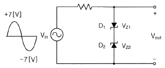
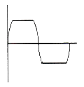
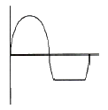
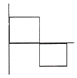
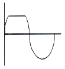
(정답률: 77%)
3. 다음 중 반파정류기의 리플 함유율을 적게 하는 방법으로 맞지 않는 것은?
- 입력측 평활용 콘덴서의 정전용량을 크게 한다.
- 출력측 평활용 콘덴서의 정전용량을 적게 한다.
- 평활용 초크코일의 인덕턴스를 크게 한다.
- 시정수를 작게 한다.
(정답률: 61%)
4. 다음 중 다이오드의 종류에 따른 용도로 틀린 것은?
- PIN 다이오드 : RF 스위치용
- 버랙터(Varactor) 다이오드 : 전압제어 발진기용
- 임팻(IMPATT) 다이오드 : 디지털 표시장치용
- 제너 다이오드 : 전압안정화 회로용
(정답률: 62%)
5. 다음 중 낮은 주파수 대역에서 높은 주파수 대역에 걸쳐 일정한 크기의 스펙트럼을 가진 연속성 잡음은 무엇인가?
- 트랜지스터 잡음
- 자연잡음
- 백색잡음
- 지터잡음
(정답률: 78%)
6. 다음 중 부궤환 증폭회로의 특징이 아닌 것은?
- 이득증가
- 비선형 일그러짐 감소
- 잡음감소
- 고주파 특성의 개선
(정답률: 70%)
7. 다음 그림의 연산 증폭기 회로의 전압증폭률(Vo/Vs)은 얼마인가?
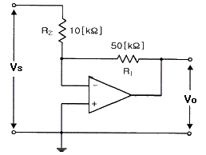
- -5
- -1
- 5
- 10
(정답률: 71%)
8. 다음 그림의 발진기 회로에서 궤환율(β)은 얼마인가? (단, R=1[kΩ], R1=18[kΩ], R2=2[kΩ], C=1[μF]이다. )
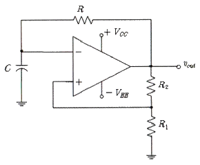
- 0.6
- 0.7
- 0.8
- 0.9
(정답률: 65%)
9. 증폭도 A인 증폭기에 궤환율 β로 정궤환 되었을 경우 발진이 이루어지는 조건으로 맞는 것은?
- Aβ = 1
- Aβ = 0
- Aβ ＞ 1
- Aβ ＜ 1
(정답률: 82%)
10. 다음 중 음성 신호의 송신측 PCM 과정이 아닌 것은?
- 표본화
- 부호화
- 양자화
- 복호화
(정답률: 88%)
11. 반송파의 위상과 진폭을 상호 직교하며 신호를 혼합하는 변조 방식은?
- ASK
- FSK
- PSK
- QAM
(정답률: 88%)
12. 트랜지스터의 스위칭 시간에서 Turn-off 시간에 해당되는 것은?
- 하강시간
- 축적시간 + 하강시간
- 상승시간 + 지연시간
- 축적시간
(정답률: 81%)
13. 다음 중 클램퍼 회로를 구성하는 부품이 아닌 것은?
- 다이오드
- 저항
- 커패시터
- 인덕터
(정답률: 58%)
14. 논리함수
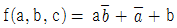
의 부정을 구한 것은?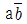
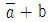
- 0
- 1
(정답률: 68%)
15. 다음 그림의 회로에서 주파수가 1,024[kHz]인 디지털 신호가 입력되었을 경우 최종 출력주파수(Fo)는 얼마인가?
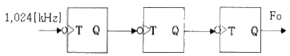
- 512[kHz]
- 256[kHz]
- 128[kHz]
- 64[kHz]
(정답률: 79%)
16. 다음의 논리회로도가 나타내는 플립플롭회로는 무엇인가?
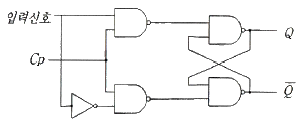
- T 플립플롭
- D 플립플롭
- J-K 플립플롭
- S-R 플립플롭
(정답률: 81%)
17. 다음 중 비동기식 카운터에 대한 설명으로 틀린 것은?
- 동기식 카운터에 비해 입력신호의 전달지연시간이 길다.
- 동기식에 비해 논리상의 오차 발생비율이 많다.
- 구조상으로 동기식에 비해 회로가 간단하다.
- 같은 클럭펄스에 의해 트리거 된다.
(정답률: 51%)
18. 2n개의 입력 데이터를 n개의 스트로브 제어신호를 이용하여 입력 데이터 중 1개를 선택하는 기능을 갖는 논리회로를 무엇이라고 하는가?
- 디멀티플렉서
- 디코더
- 인코더
- 멀티플렉서
(정답률: 76%)
19. 연산 논리 장치라 하며 CPU 내에서 모든 연산이 이루어지는 곳을 무엇이라고 하는가?
- LSI
- ALU
- Accumulator
- Flag Register
(정답률: 81%)
20. 기억된 정보를 보존하기 위해 주기적으로 리플래시(Refresh)를 해주어야 하는 기억소자는?
- Dynamic ROM
- Static ROM
- Dynamic RAM
- Static RAM
(정답률: 86%)
2과목: 정보통신기기
21. 컴퓨터 시스템의 처리결과를 데이터 또는 문자로 바꿔주는 장치는?
- 플로터
- OMR
- OCR
- 카드 리더
(정답률: 69%)
22. 정보 단말기의 기능 중 통신 장비 간의 약속된 부호를 송ㆍ수신하여 에러를 검출하거나 정정하는 기능을 무엇이라 하는가?
- 입ㆍ출력 제어 기능
- 다중화 제어 기능
- 송ㆍ수신 제어 기능
- 에러 제어 기능
(정답률: 66%)
23. 다음 중 정보 단말기의 입ㆍ출력 기능에 속하는 것은?
- 입력 변화 기능
- 입ㆍ출력 제어 기능
- 에러 제어 기능
- 송ㆍ수신 제어 기능
(정답률: 69%)
24. 다음 중 PCM(Pulse Code Modulation)에 대한 설명으로 틀린 것은?
- 아날로그 데이터를 디지털 신호로 변환하여 전송하고 재생하는 방식이다.
- 표본화, 양자화, 부호화 단계로 구성된다.
- PCM 잡음에는 양자화잡음 등이 있다.
- 표본화율(Sampling Rate)은 원신호의 최소 주파수를 1/2 이하로 하는 나이키스트(Nyquist) 이론을 바탕으로 한다.
(정답률: 80%)
25. 다음 중 외장형 케이블 모뎀에 대한 설명으로 알맞은 것은?
- 기존에 사용하던 전화를 연결하여 사용할 수 있다.
- 케이블 TV와는 별도로 구성된 케이블 망을 사용한다.
- 하향으로는 256QAM 또는 64QAM 변조방식이 사용된다.
- PC와의 인터페이스는 EIA-232D(RS-232C) 방식을 사용한다.
(정답률: 76%)
26. 다음 중 전송시스템에서 다중화(Multiplexing)란 무엇인가?
- 다중신호를 다중 통신채널에 보내는 것
- 다중신호를 하나의 통신채널에 보내는 것
- 동일신호를 다중 통신신호로 보내는 것
- 동일신호를 하나의 통신채널에 보내는 것
(정답률: 83%)
27. 다음 중 주파수분할다중화기(FDM)에 대한 설명으로 옳지 않은 것은?
- 동기식 데이터 다중화에 사용된다.
- 1,200[bps] 이하에서 사용된다.
- 채널간 완충지역으로 가드밴드(Guard Band)를 주어야 한다.
- 별도의 모뎀이 필요 없다.
(정답률: 62%)
28. 4위상 PSK 변ㆍ복조기에서 변조속도가 2,400[baud]일 때 데이터 전송속도는?
- 9,600[baud]
- 4,800[baud]
- 2,400[baud]
- 1,200[baud]
(정답률: 83%)
29. 데이터 회선 종단장치(DCE)의 일종으로 디지털 전송로에 디지털 신호를 전송하는 장치를 무엇이라 하는가?
- DSU
- MODEM
- CPU
- FEP
(정답률: 76%)
30. 전화기의 기능 중 상대방의 번호를 발생시키는 기구로 다이얼(Dial)이 있다. 다음 중 다이얼 신호가 아닌 것은?
- DP(Dial Pulse) 신호
- PB(Push Button) 신호
- MFC(Multi Frequency Code) 신호
- HS(Hook Switch) 신호
(정답률: 77%)
31. CATV 방송에서 입력측 (C/Ni)=20이고, 출력측 (C/No)=10이라고 가장하면 잡음지수(Noise Factor)는 얼마인가?
- 0.5
- 1
- 2
- 3
(정답률: 82%)
32. 다음 중 디지털 TV와 IPTV 방송의 영상압축 전송기술의 방식이 아닌 것은?
- MPEG4
- H.264
- WMT9
- AC3
(정답률: 69%)
33. 다음 중 디지털 TV 방송의 특성에 대한 설명으로 틀린 것은?
- 영상 및 음향신호의 압축이 용이하고 녹화 재생시 화질이나 음질의 열화가 적다.
- 다양한 멀티미디어의 많은 정보를 서비스할 수 있다.
- 오류 정정 기술을 사용할 수 있고 저장 및 복제에 따른 손실이 적다.
- 상호간섭이 비교적 많고, 신호의 열화가 급격한 편이다.
(정답률: 85%)
34. 다음 중 위성통신을 이용한 통신서비스로 적합하지 않은 것은?
- HDTV 방송
- 재난대비 백업회선
- 웹서버 운영
- 해상 전화통화
(정답률: 77%)
35. 100[mW]의 신호 전력을 [dBm]으로 환산하면 얼마인가?
- 10[dBm]
- 20[dBm]
- 30[dBm]
- 40[dBm]
(정답률: 71%)
36. 다음 중 정지 위성통신에 대한 설명으로 옳지 않은 것은?
- 통신 영역이 넓고 고품질의 통신이 가능하다.
- 다원접속(Multiple Access)이 가능하다.
- 방송에 이용시 난시청 지역을 해소할 수 있다.
- 전파의 전송지연이 발생하지 않는다.
(정답률: 77%)
37. 다음 중 4세대 이동통신 서비스를 이용하기 위해 사용되는 단말기는?
- PCS 단말기
- CDMA 단말기
- PSTN 단말기
- LTE Advanced 단말기
(정답률: 86%)
38. 비디오, 오디오, 데이터 등 모든 것을 디지털 처리한 후 전송하는 TV 방식과 거리가 먼 것은?
- SDTV
- HDTV
- UHDTV
- 아날로그TV
(정답률: 87%)
39. 전자칩을 부착하고 무선통신기술을 이용하여 사물의 정보를 확인하고 감지하는 센서 기술을 이용한 것은?
- WiBro
- Telemetics
- RFID
- DMB
(정답률: 87%)
40. 고품질의 영상서비스를 언제 어디서나 제공할 수 있는 이동 멀티미디어 방송서비스가 가능한 것은?
- CATV
- DMB
- IPTV
- RFID
(정답률: 83%)
3과목: 정보전송개론
41. 다음 중 표본화 종류가 아닌 것은?
- 순시 표본화
- Flat-top Sampling
- Natural Sampling
- Time Sampling
(정답률: 71%)
42. 주파수대역폭이 fd[Hz]이고 통신로의 채널용량이 6fd[bps]인 통신로에서 필요한 S/N비는?
- 15
- 31
- 63
- 127
(정답률: 80%)
43. PCM에서 입력신호의 최고주파수(fm)와 표본화 주파수(fs)의 조건으로 맞는 것은?
- fs = fm
- fs ≥ 2fm
- fs ≤ 2fm
- fs ≥ fm/2
(정답률: 71%)
44. 음성의 디지털 부호화 기술 중 파형 부호화 방식이 아닌 것은?
- LPC
- PCM
- DPCM
- DM
(정답률: 63%)
45. 다음 중 전송선로에서 누화(Cross Talk)의 영향을 줄이는 방법과 관계없는 것은?
- 누화 보상
- 프로징(Frogging)
- 압신기(Compander)
- 시험감쇄(Test Attenuation)
(정답률: 66%)
46. 주배선반(MDF)에서 댁내 배선이 1페어(pair)인 아파트에서 1페어 동선을 이용하여 인터넷을 연결하기 위해 가장 적합한 초고속인터넷 방식은?
- ADSL
- HDSL
- 광랜
- FTTH
(정답률: 50%)
47. 다음 중 광통신시스템에서의 손실에 해당되지 않는 것은?
- 커넥터 손실
- 접속 손실
- 전반사 손실
- 광섬유 손실
(정답률: 71%)
48. 다음 중 동축케이블과 비교할 때 광섬유케이블이 갖는 장점이 아닌 것은?
- 장거리 전송이 가능하다.
- 경제적이고 수명이 길다.
- 전송용량이 훨씬 크다.
- 접속과 제조가 용이하다.
(정답률: 76%)
49. 통신용 주파수 대역 내 통신신호와의 간섭이 없다는 이점이 있으나 다중전송방식의 주파수 이용효율이 낮고 다중분리 필터가 복잡해지는 단점이 있는 통화로 신호방식은?
- 직류방식
- In-band 방식
- Out-of-band 방식
- 혼합방식
(정답률: 64%)
50. 다음 중 혼합형 동기식 전송 방식(Isochronous Transmission)의 특징이 아닌 것은?
- 일반적으로 비동기식 전송보다 전송속도가 빠르다.
- 동기식 전송과 비동기 전송의 특성을 혼합한 방식이다.
- 문자와 무자 사이에 휴지시간이 없다.
- Start bit와 Stop bit를 가진다.
(정답률: 82%)
51. 디지털 정보통신시스템이 9,600[bps]로 동작하여야 할 경우 신호요소가 4[bit]로 인코드 된다면 이상적인 전송채널에서 최소 얼마의 대역폭이 필요한가?
- 1,200[Hz]
- 2,400[Hz]
- 4,800[Hz]
- 9,600[Hz]
(정답률: 81%)
52. HDLC(High-Level Data Link Control) 프로토콜의 전송방식은?
- 문자(중심)방식
- 바이트(중심)방식
- 비트(중심)방식
- 혼합동기방식
(정답률: 77%)
53. OSI 7계층에서 논리적인 통신로의 설정 및 종단 시스템간의 데이터 전송에서 오류 검출 및 정정, 흐름제어 등의 기능을 제공하는 계층은?
- 데이터링크 계층
- 네트워크 계층
- 트랜스포트 계층
- 세션 계층
(정답률: 43%)
54. 프로토콜의 기본 구성요소 중 전송의 조정이나 오류 제어를 위한 제어정보를 규정하는 것을 무엇이라 하는가?
- 구문(Syntax)
- 의미(Semantics)
- 타이밍(Timing)
- 동기(Synchronization)
(정답률: 68%)
55. 다음 중 OSI 7계층의 하위 계층에 해당하는 것은?
- 물리계층, 데이터링크계층, 네트워크계층
- 세션계층, 표현계층, 네트워크계층
- 물리계층, 트랜스포트계층, 표현계층
- 데이터링크계층, 트랜스포트계층, 세션계층
(정답률: 90%)
56. 네트워크 연결 장치에 속하는 브리지(Bridge)는 주소표의 정보와 프레임의 무엇을 비교하여 패킷을 전달하는가?
- 데이터링크계층의 발신지 주소
- 발신노드의 물리 주소
- 데이터링크계층의 목적지 주소
- 네트워크계층의 목적지 주소
(정답률: 71%)
57. IP address 체계의 B class에서 하나의 네트워크에서 수용할 수 있는 최대 호스트 수는 몇 개인가?
- 128개
- 254개
- 65,534개
- 16,277,214개
(정답률: 85%)
58. 네트워크 계층 중 접속형 연결방식에 대한 설명으로 맞지 않는 것은?
- 가상회선교환방식이다.
- 패킷 수신 순서는 전송 순서의 역순이다.
- 초기 설정과정이 필요하다.
- 상대 주소는 접속 설정 시에만 필요하다.
(정답률: 58%)
59. 다음 중 HDLC의 제어 명령어에 대한 설명으로 옳지 않은 것은?
- RR : 수신 준비가 되어 있다는 것을 알림
- UA : 비 번호제 명령에 대한 응답
- SNRM : 정규 응답 모드로의 데이터링크 설정을 요청
- SARM : 비동기 평형 모드로의 연결설정 요구
(정답률: 62%)
60. 다음 전송 방식 중 양쪽 방향으로 송수신이 가능하지만 한쪽이 송신하면 다른 한쪽은 수신하는 방식은?
- 단방향 전송방식
- 반이중 전송방식
- 전이중 전송방식
- 병렬 전송방식
(정답률: 85%)
4과목: 전자계산기일반 및 정보설비기준
61. 다음 중 운영체제에 대한 설명으로 옳지 않은 것은?
- 컴퓨터 하드웨어에 대한 자원을 관리하는 소프트웨어이다.
- 응용 프로그램과 하드웨어 자원에 대한 연계 역할을 수행하는 소프트웨어이다.
- 컴퓨터에서 항상 수행되고 있으며, 운영체제의 가장 핵심적인 부분은 커널(Kernel)이다.
- 사용자가 필요하다고 생각되는 경우 쉽게 접근하여 운영체제의 프로그램을 변경할 수 있다.
(정답률: 78%)
62. 다음 문장의 괄호 안에 들어갈 용어들로 올바르게 구성된 것은?
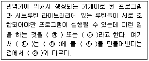
- ㉮ 절대 로더, ㉯ 상대 로더, ㉰ 주기억장치, ㉱ 링킹 로더
- ㉮ 절대 로더, ㉯ 링키지 에디터, ㉰ 보조기억장치, ㉱ 링킹 로더
- ㉮ 링킹 로더, ㉯ 링키지 에디터, ㉰ 보조기억장치, ㉱ 로딩 이미지
- ㉮ 링키지 에디터, ㉯ 링킹 로더, ㉰ 주기억장치, ㉱ 로딩 이미지
(정답률: 62%)
63. 16진수 FA.5를 8진수로 변환한 것으로 옳은 것은?
- 241.218
- 352.228
- 261.238
- 372.248
(정답률: 67%)
64. 2의 보수를 이용한 뺄셈 0011 - 1101의 연산 결과 값은?
- 0111
- 1011
- 0110
- 1001
(정답률: 59%)
65. 다음 중 전자계산기 명령(Instruction)의 주소 지정 방식인 간접 주소 지정 방식(Indirect Addressing)에 대한 설명으로 틀린 것은?
- 명령의 오퍼랜드가 지정하는 부분에 실제 데이터가 저장된 부분의 주소를 기록하고 있는 주소 지정 방식
- 기억장치에 최소 2번 접근하여 오퍼랜드를 얻을 수 있는 주소 지정 방식
- 처리 속도는 느리지만 짧은 길이의 오퍼랜드로 긴 주소에 접근할 수 있는 주소 지정 방식
- 오퍼랜드의 길이가 길어 소용량 기억장치의 주소를 나타내는 데 적합한 주소 지정 방식
(정답률: 51%)
66. 다음 중 운영체제의 목적과 관련된 용어에 대한 설명으로 옳지 않은 것은?
- 이용가능도 : 컴퓨터를 사용하고자 할 때 신속하게 사용할 수 있는 정도
- 응답시간 : 사용자가 컴퓨터에 일을 지시하고 나서 그 결과를 얻기까지 걸리는 시간
- CPU 사용률 : 일정 시간동안 시스템이 처리할 수 있는 일의 양
- 신뢰도 : 주어진 문제를 정확하게 해결하고 작동하는 정도
(정답률: 66%)
67. 다음은 NOR 게이트 진리표이다. 출력 X의 a, b, c, d 값으로 옳은 것은? (단, A, B는 입력이고 X는 출력이다.)
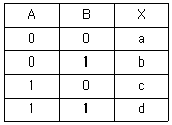
- a=0, b=0, c=0, d=1
- a=1, b=0, c=1, d=1
- a=0, b=1, c=0, d=0
- a=1, b=0, c=0, d=0
(정답률: 74%)
68. 다음 중 부동 소수점 표현(Floating Point Representation)에 대한 설명으로 틀린 것은?
- 고정 소수점 표현보다 표현의 정밀도를 높일 수 있다.
- 아주 작은 수의 표현보다 아주 큰 수의 표현에만 적합하다.
- 과학, 공학, 수학적인 응용에 주로 사용하는 표현 방법이다.
- 수의 표현에 필요한 자릿수에 있어서 효율적이다.
(정답률: 75%)
69. 다음 중 운영체제 기법에 대한 설명으로 틀린 것은?
- 분산처리 시스템은 데이터를 여러 컴퓨터로 분산해서 사용하는 것을 말한다.
- 데이터베이스는 상호 연관 있는 데이터들의 집합과 처리를 말한다.
- 다중 프로세싱이란 여러 CPU를 같이 사용하는 것을 말한다.
- UNIX는 단일 사용자 환경을 제공한다.
(정답률: 78%)
70. 32비트 컴퓨터에서 8 Full Word와 6 Nibble은 각각 몇 비트인가?
- 256비트, 48비트
- 128비트, 24비트
- 256비트, 24비트
- 128비트, 48비트
(정답률: 63%)
71. 국선단자함에서 동단자함 또는 동단자함에서 동단자함까지(건물간 구간) 연결하는 통신케이블을 무엇이라 하는가?
- 구내간선케이블
- 구내배선케이블
- 수평간선케이블
- 수평배선케이블
(정답률: 72%)
72. 다음 중 정보통신설비의 설치 및 유지ㆍ보수에 관한 공사와 이에 따른 부대공사 중 통신설비공사에 해당하지 않는 것은?
- 전송단국설비, 다중화설비, 중계설비, 분배설비 등의 공사
- 무선CATV설비, 방송통신융합시스템설비, 무선적외선설비 등의 공사
- 구내통신선로설비ㆍ방송공동수신설비, 키폰전화설비 등의 공사
- 영상 및 음향설비, 송출설비, 방송관리시스템설비 등의 공사
(정답률: 68%)
73. 다음은 누화에 관한 규정이다. 괄호 안에 적합한 것은?
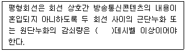
- 48
- 56
- 68
- 76
(정답률: 82%)
74. 방송통신설비가 다른 사람의 방송통신설비와 접속되는 경우에 그 건설과 보전에 관한 책임 등의 한계를 명확하게 하기 위하여 설정하여야 하는 것은?
- 접속점
- 분계점
- 단자반
- 경계점
(정답률: 83%)
75. 정보통신공사업법에서 정의하는 정보통신공사의 기본적인 사항을 나열한 것으로 알맞은 것은?
- 조사ㆍ평가ㆍ시공ㆍ자문ㆍ유지관리ㆍ기술관리
- 설계ㆍ조사ㆍ검사ㆍ분석ㆍ유지관리ㆍ기술관리
- 조사ㆍ자문ㆍ시공ㆍ감리ㆍ유지관리ㆍ기술관리
- 조사ㆍ설계ㆍ시공ㆍ감리ㆍ유지관리ㆍ기술관리
(정답률: 73%)
76. 다음 중 정보통신공사업 등록이 취소되는 경우가 아닌 것은?
- 타인에게 등록증이나 등록수첩을 빌려준 경우
- 등록기준에 관한 사항을 거짓으로 신고한 경우
- 최근 7년간 2번의 영업정지처분을 받은 경우
- 부정한 방법으로 공사업의 등록을 한 경우
(정답률: 76%)
77. 선로의 도달이 어려운 지역을 해소하기 위해 사용하는 증폭장치는?
- 전송장치
- 발진장치
- 제어장치
- 중계장치
(정답률: 78%)
78. 지능형 홈네트워크 설비에서 세대망과 단지망을 상호 접속하는 장치는?
- 단지서버
- 세대단자함
- 월패드
- 홈게이트웨이
(정답률: 77%)
79. 다음 중 전기통신사업법에 따른 용어로 맞는 것은?
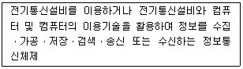
- 정보전송설비
- 인터넷설비
- 정보통신망
- 컴퓨터통신망
(정답률: 77%)
80. 다음 중 정보통신공사업 등록을 위하여 첨부하는 서류가 아닌 것은?
- 기업진단보고서
- 정보통신기술자 명단
- 사무실 보유를 증명하는 서류
- 법인 인감 증명서
(정답률: 53%)